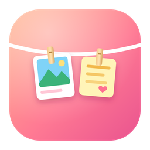

晾晾 Pegline更新于 2026 年 11 月
所有卡片和设置都存在你电脑上的晾晾数据文件夹里：
%APPDATA%\Pegline~/Library/Application Support/Pegline点卡片上的 ×、在菜单里「清空绳子」，或者卸载晾晾并删除这个文件夹，内容就会被删除。没有云端备份，我们也拿不到这些内容。
晾晾会在数据文件夹里写一份很小的本地日志（pegline-debug.log），只记录版本号和程序报错，方便排查问题，同样不会被发送出去。
晾晾不面向 13 岁以下儿童，也不会有意收集任何人的个人信息。
如果以后加入了需要联网的功能（比如检查更新），我们会先更新这份说明，并在应用里告诉你。
Pegline does not connect to the internet, has no accounts and collects no data. When automatic collection is on, it reads the clipboard locally to hang new screenshots, copied files, text and links on the rope; on macOS it also watches the system screenshot folder for new screenshots. Everything is stored only on your computer (%APPDATA%\Pegline on Windows, ~/Library/Application Support/Pegline on macOS) and is deleted when you remove a card, clear the rope, or delete that folder. Pegline contains no analytics, advertising or crash-reporting SDKs and shares nothing with third parties. A small local log file (pegline-debug.log) records the version and errors and never leaves your computer. If a future version adds any network feature, this policy will be updated first.